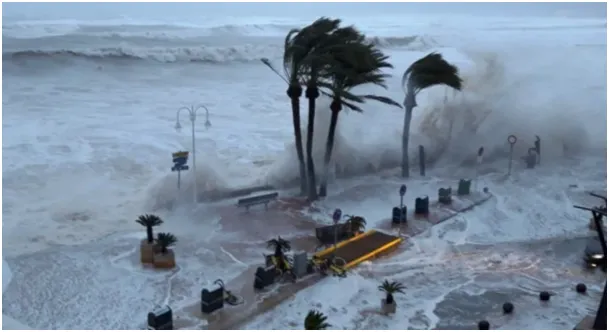
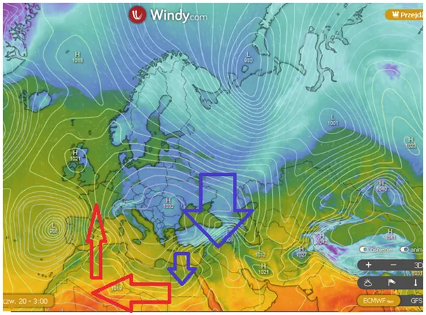
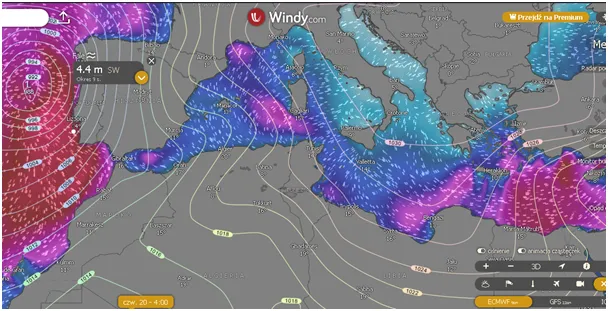
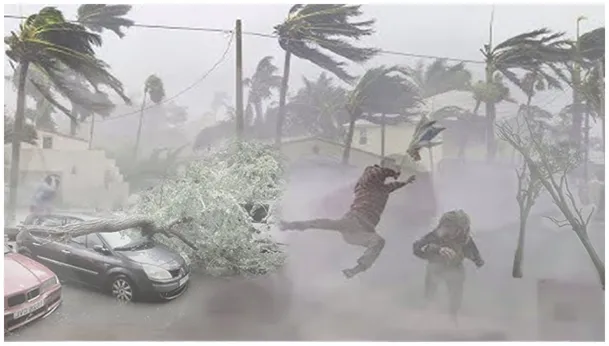

Marzec dąży do średniej
Jest taki pół żart, pół prawda wśród statystyków, że główne prawo w Kosmosie brzmi: "Średnia średnich dąży do średniej". I tak oto po bardzo ciepłym początku marca mamy temperatury, które dadzą nam ponownie średnią zbliżoną do obserwacji wieloletnich.

Marzec to okres bardzo dynamicznego mieszania się powietrza z południa z zimnym arktycznym. Przejawem tego są silne wiatry i sztormy, portugalskie wybrzeża są dziś świadkiem ponad 4 metrowych fal, podobnie wzburzone jest Morze Śródziemne w pobliżu Turcji.

Trudno o tej porze roku o rozsądne prognozy na dłużej niż 3-4 dni, ale zamiast prognoz lepiej zdać się na "prawo średnich" i założyć, że w tym marcu po ciepłym początku "ziemia nie spłonie". Na mapce wiarygodna prognoza na 3 dni, rozległy wyż w nocy da przymrozki na południu Grecji i w całej górzystej Turcji. Zimno trafi do Afryki, gdzie szybko się nagrzeje, bo Słońce już tam operuje solidnie i wróci do Europy Zachodniej. Tak to się w marcu kręci.

Rok temu w okolicach Wielkanocy ostrzegałem amatorów hiszpańskiej wiosny: "Zanim polecisz na Baleary obejrzyj izobary." https://pawelklimczewski.pl/2024/03/27/zanim-polecisz-na-baleary-obejrzyj-izobary/
Paweł Klimczewski